チャット AI
質問と回答、検索、要約が中心。業務データは人間がコピーし、プロンプト化し、結果を別ツールへ戻す必要があった。
ANTHROPIC · CLAUDE FOR SMALL BUSINESS · 2026/05/14
AI がユーザーをチャット画面に呼び込む段階は終わりつつある。次の焦点は、QuickBooks、PayPal、HubSpot、DocuSign、Canva、Slack などの実務ツールへ AI が出向き、経営者のバックオフィスを横断して動かす Business OS である。

今回の本質は、AI が人間の言葉に合わせるだけでなく、人間の実務を肩代わりする段階へ進んだことにある。ユーザーが AI の画面へ歩み寄るのではなく、AI が仕事のある場所へ入っていく。
質問と回答、検索、要約が中心。業務データは人間がコピーし、プロンプト化し、結果を別ツールへ戻す必要があった。
AI が既存 SaaS に接続し、照合、分析、下書き、実行準備まで進める。人間は判断と承認に集中する。
シリコンバレーの開発組織ではなく、15 人規模の空調設備会社、造園業者、地域の小売店のような実業の現場が中心になる。
経営、営業、実務を兼任し、IT スキル習得に割く時間がない。Claude は週次概況、資金繰り、優先事項をまとめる。
銀行、決済、会計ソフト間の照合を手作業で行っていた領域。残高照合や月次レポート下書きを担う。
CRM、販促、分析が分断される領域。リード優先順位、施策立案、Canva 素材生成までつなぐ。
独自フローを AI 化したいが開発コストが重い。SKILL.md で業務ロジックをカプセル化する。
経理、決済、契約、顧客情報がサイロ化し、経営者がその隙間を夜間や週末に手で埋めていた。Claude の価値は、この「手作業の連鎖」を断ち切る点にある。
CSV エクスポート、インポート、ブラウザ往復を減らし、AI が接続先で直接作業する。
会計、決済、CRM、契約データのズレを検知し、修正案や確認ポイントを提示する。
請求書督促や入金確認のような精神的負荷の高いルーチンを準備段階まで代替する。
実データに繋がらない助言ではなく、SoR の数値を根拠にした行動案を作る。
金銭や顧客連絡は承認を挟む。自律実行とガバナンスを両立させる。
単なる効率化ではなく、経営者が戦略や家族との時間を取り戻すことが最終価値になる。
AI が業務 OS として成立するには、接続、業務ロジック、承認 UX の 3 層が必要になる。
QuickBooks、PayPal、HubSpot、DocuSign、Canva、Slack など、実務データが存在する場所へ接続する。
SKILL.md が業務手順、文脈、ベストプラクティスを保持し、複雑な多段階業務を再現する。
支払いや顧客連絡の前に人間の判断を挟む。AI は完璧な下書きを作り、人間は承認する。
| 領域 | 連携ツール | Claude に任せられる範囲 |
|---|---|---|
| 財務・経理 | QuickBooks / PayPal / Stripe | 残高照合、資金繰り予測、請求書督促、税務準備 |
| 営業・CRM | HubSpot | リード優先順位、活動分析、フォローアップ提案 |
| 制作・広報 | Canva | ブランドガイドラインに沿った販促素材の生成 |
| 契約・事務 | DocuSign / Google / Microsoft | 契約要約、署名管理、会議資料、月曜ブリーフィング |
価値は定型処理ではなく、データの背後にあるリスクや機会を推論して、次のアクション候補まで準備するところにある。
QuickBooks の残高と PayPal の入金予定を照合し、資金不足リスクと回収見込みの高い顧客を提示する。
帳簿と決済データの不一致にフラグを立て、会計士に出せる背景説明付きの財務レポートを生成する。
現金残高、売上、パイプライン、今日の最優先事項を 1 ページに集約し、経営判断の入口を作る。
入力データの学習利用設定、プランごとの差分、閲覧権限の継承、支払いや顧客連絡前の承認を明示する。AI は Prepare はできるが Certify はできない。法的責任と最終承認は常に人間側に残る。
送金、契約、顧客連絡など不可逆な行為は承認 UX を必須にする。
Claude 経由でも本人が閲覧できない給与や機密情報にはアクセスさせない。
機密情報を扱う前に Privacy & Personalization とプランの学習利用条件を確認する。
米国中心の SaaS 連携をそのまま持ち込むだけでは、日本の会計ソフト、税制、商習慣に届かない。待つだけでなく、自社システムや国内 SaaS を Claude に接続する MCP / Skills の整備が鍵になる。
freee、マネーフォワードなど国内主要会計ソフトとのネイティブ連携が導入速度を左右する。
インボイス制度、支払調書、源泉徴収など、日本固有の実務ルールへの調整が必要になる。
税理士・士業・中小企業の DX 格差が広がる。早期に業務フローを定義できる組織が先行する。
業務実行エージェントの全体像、連携する SaaS、経理・営業・契約業務での使い方、安全な運用ルール、導入ロードマップを一覧できる補足資料です。中小企業の経営者や業務責任者が「何から試すべきか」を判断できるように整理しています。
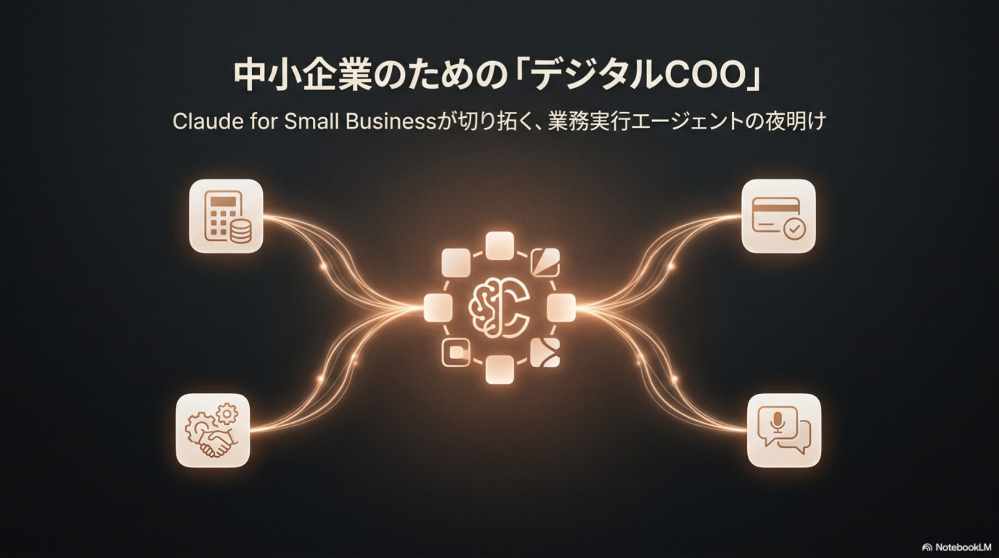
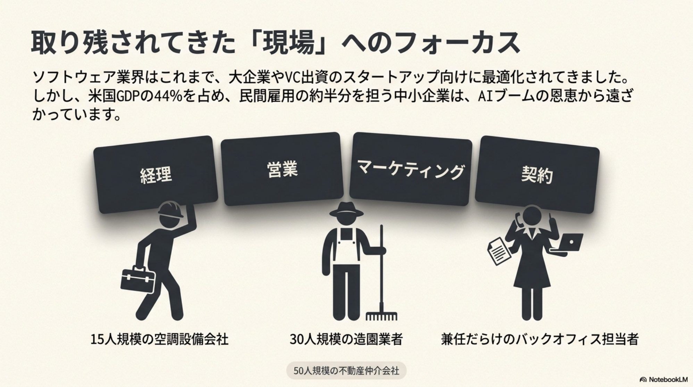
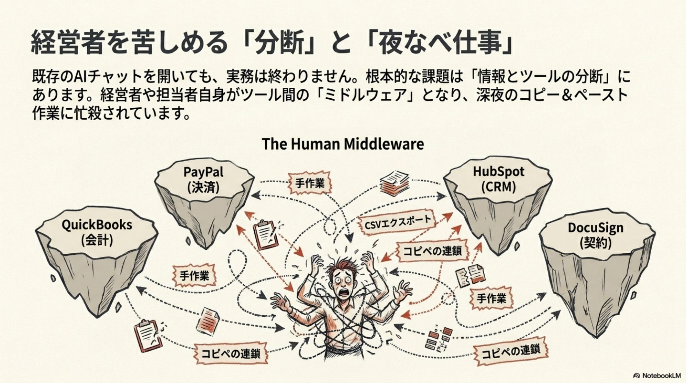
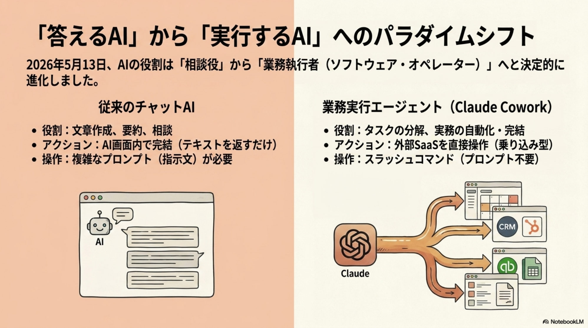
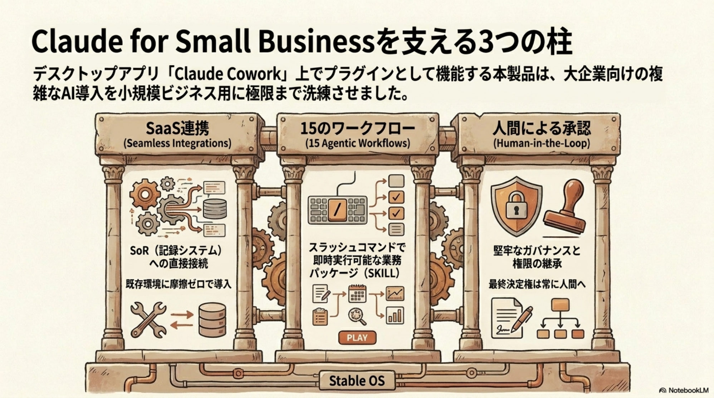
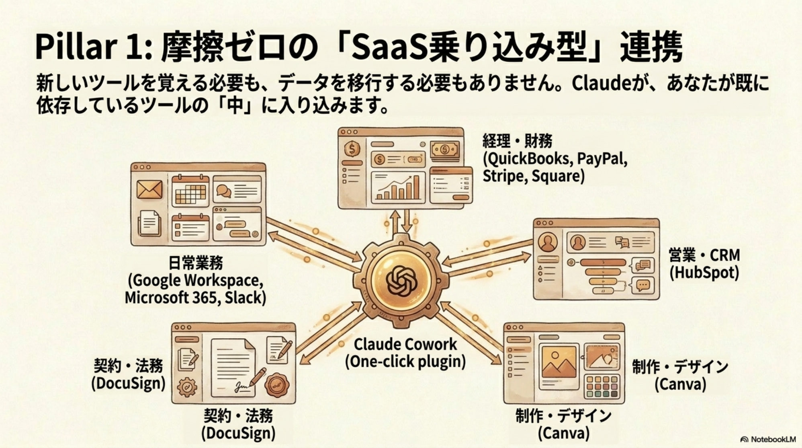
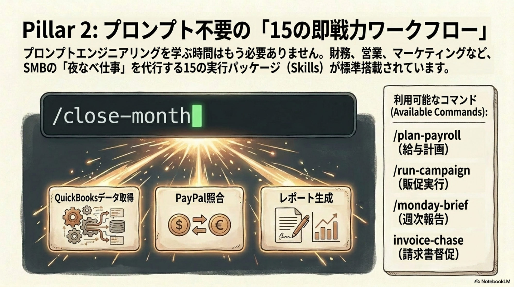
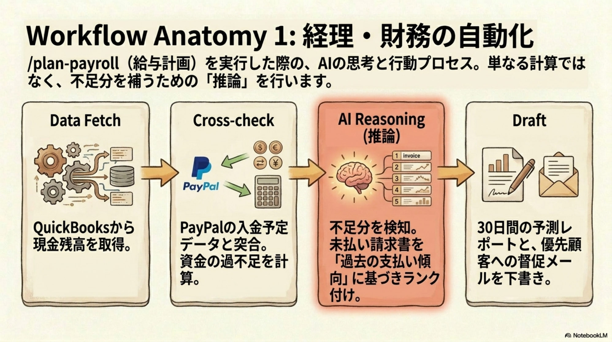
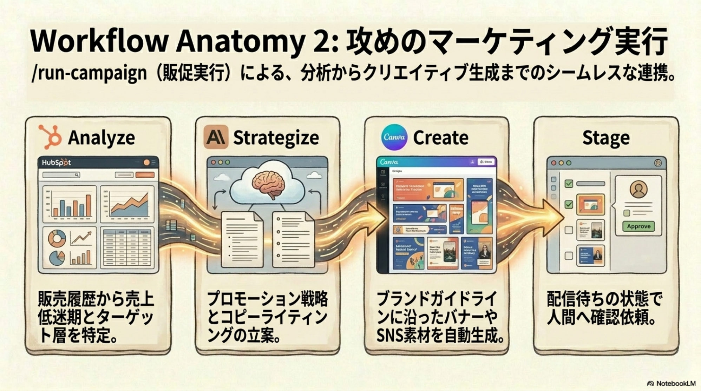
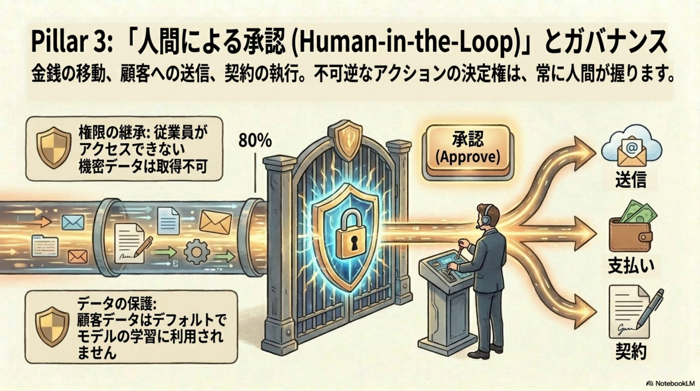
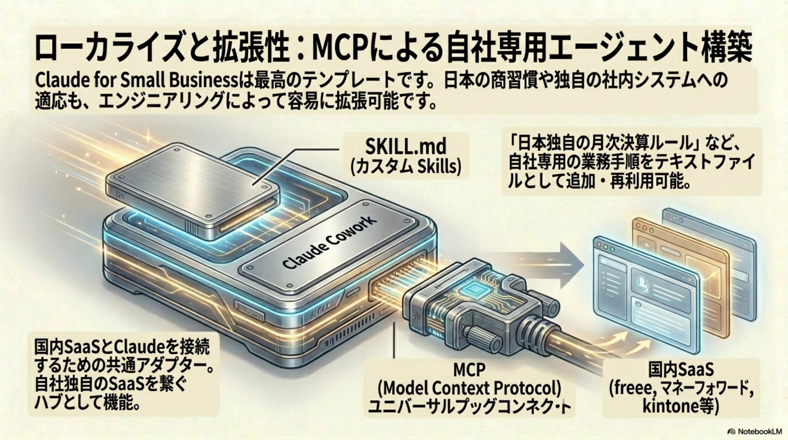
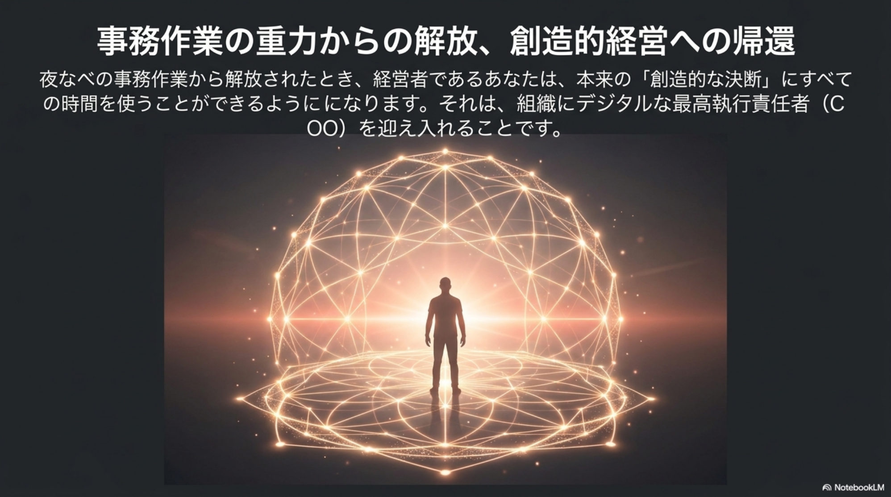